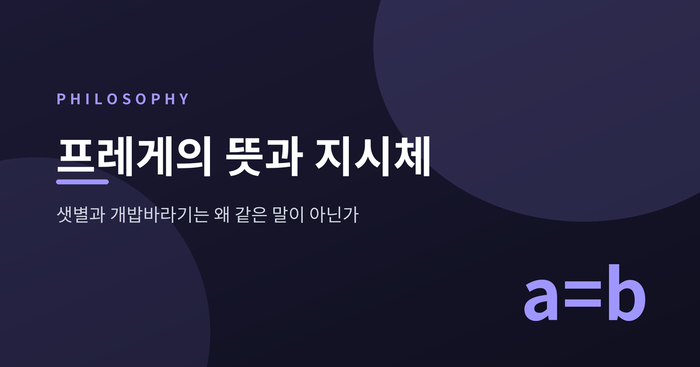
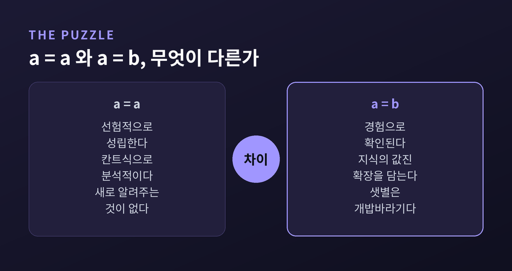
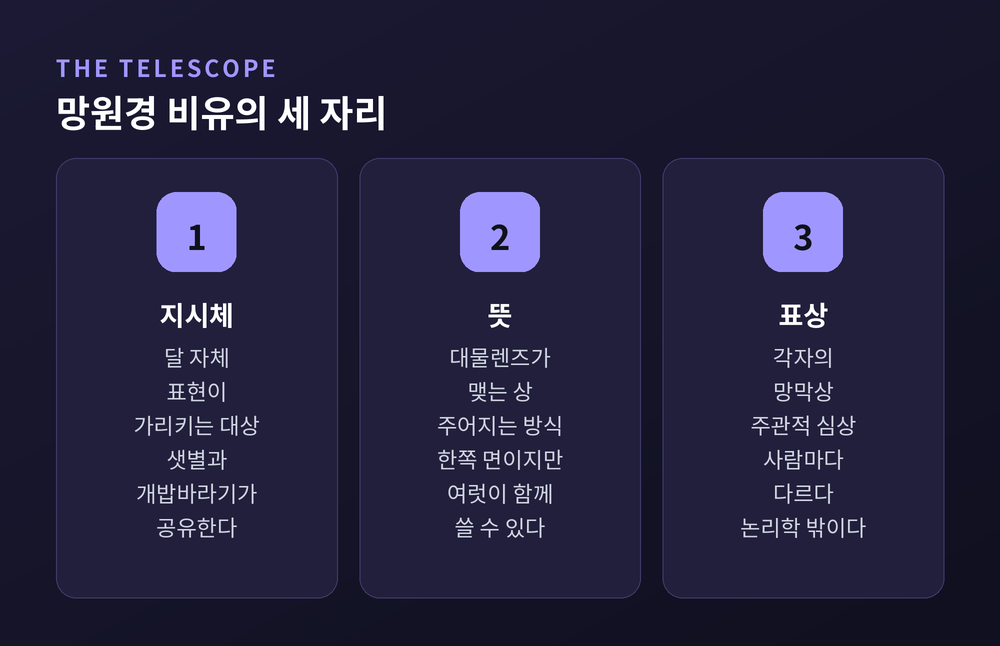
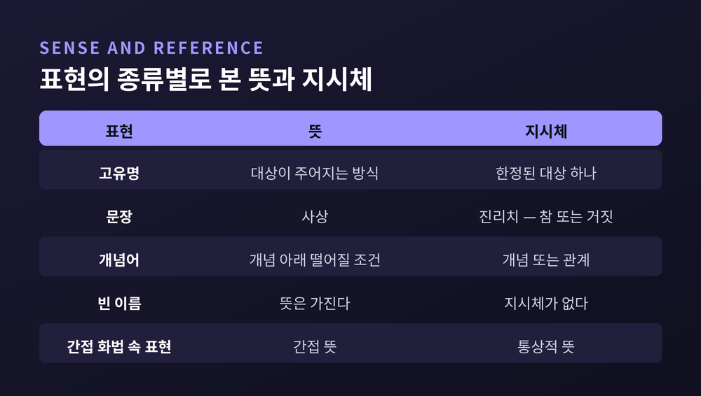
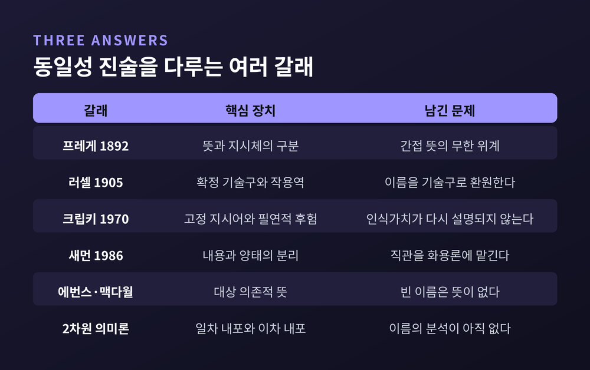

이번 글에서는 프레게의 뜻과 지시체 구분을 정리해 보겠습니다. 1892년 논문 한 편에서 시작된 물음이 러셀과 크립키를 거쳐 지금까지 이어지는 과정을 따라가려 합니다.

세 줄 요약
a=a와 a=b의 인식가치가 왜 다른지 묻고, 표현에 지시체 말고 뜻이라는 층을 하나 더 두어 답했습니다.저녁 서쪽 하늘에서 가장 먼저 밝아지는 별을 개밥바라기라 부릅니다. 새벽 동쪽에서 마지막까지 남는 별은 샛별이라 부릅니다. 둘은 같은 금성입니다.
문제는 여기서 생깁니다.
"샛별은 샛별이다"는 아무것도 알려주지 않습니다. "샛별은 개밥바라기다"는 천문학의 발견입니다. 그런데 두 문장은 같은 대상에 대해, 같은 동일성 관계를 말하고 있습니다.
프레게는 1892년 논문 「뜻과 지시체에 관하여」를 이 물음으로 엽니다. 동일성은 숙고를 요구한다고 그는 씁니다. a=a는 선험적으로 성립하지만, a=b 형태의 문장은 "우리 지식의 매우 값진 확장"을 담는 경우가 많습니다. 두 문장의 인식가치가 다릅니다.
이름이 그저 대상을 대신하는 표지에 불과하다면, 이 차이는 설명될 자리가 없습니다.

1892년 논문의 놀라운 점은 두 번째 문단에 있습니다. 프레게는 1인칭으로 씁니다 — 후자를 나는 나의 『개념표기법』에서 가정했었다고.
1879년 『개념표기법』 8절에서 그는 동일성을 기호들 사이의 관계로 보았습니다. 다른 모든 자리에서 기호는 자기 내용을 대신하지만, 동일성 기호 양옆에서만은 기호가 자기 자신을 대표해 선다는 것입니다. "샛별은 개밥바라기다"는 두 이름이 같은 내용을 가진다는 주장이 됩니다.
이 답은 인식가치의 차이를 설명하기는 합니다. 그러나 프레게는 스스로 이것을 무너뜨립니다.
이유는 한 문장으로 압축됩니다. 기호와 대상을 잇는 연결은 자의적입니다. 임의로 만들어 낼 수 있는 어떤 것이든 어떤 것의 기호로 쓰는 일을 누구에게도 금할 수 없습니다. 그렇다면 "샛별은 개밥바라기다"는 사태 자체가 아니라 우리의 명명 방식에 관한 진술이 되고 맙니다.
프레게의 판정은 단호합니다. 그런 문장에서 우리는 어떤 진정한 인식도 표현하지 못합니다. 그리고 진정한 인식이야말로 많은 경우 우리가 원하는 바로 그것입니다.
바빌로니아의 관측자들은 기원전 2천년기부터 금성의 새벽 출현과 저녁 출현을 하나의 순환으로 기록했습니다. 그들이 21년치 관측을 서판에 새긴 것은 이름을 정리하기 위해서가 아니었습니다.
그래서 프레게는 층을 하나 더 놓습니다.
표현에는 그것이 가리키는 대상, 곧 지시체가 있습니다. 그리고 그 대상이 주어지는 방식이 담긴 것, 곧 뜻이 있습니다. 샛별과 개밥바라기는 지시체가 같고 뜻이 다릅니다. 차이는 대상 쪽이 아니라 접근 경로 쪽에 있습니다.
여기서 뜻을 개인의 심상과 혼동하기 쉽습니다. 프레게는 망원경 비유로 이를 갈라놓습니다.
달 자체가 지시체입니다. 망원경 안에서 대물렌즈가 맺는 상이 뜻입니다. 관찰자의 망막에 맺힌 상이 표상입니다. 광학적 상은 관측 위치에 의존하는 한쪽 면일 뿐이지만, 여러 사람이 동시에 사용할 수 있다는 점에서 객관적입니다. 망막상은 각자의 것입니다.
뜻은 그 중간에 놓입니다. 더 이상 주관적이지 않고, 그렇다고 대상 자체도 아닙니다.
프레게는 여기서 한계를 분명히 인정합니다. 하나의 뜻은 지시체를 오직 한쪽 면으로만 비춘다고, 대상에 대한 포괄적 지식에는 "우리는 결코 이르지 못한다"고 그는 씁니다.
그리고 뜻이 지시체를 보증하지도 않습니다. "가장 느리게 수렴하는 급수"는 뜻을 가지지만, 어떤 수렴 급수에 대해서도 더 느린 것을 찾을 수 있으므로 지시체가 없다는 것이 증명됩니다.

프레게는 여기서 멈추지 않고 문장 전체로 밀고 갑니다.
문장의 뜻은 사상입니다. 그렇다면 문장의 지시체는 무엇인가. 프레게의 답은 진리치입니다. 참과 거짓, 둘뿐입니다.
논증은 빈 이름을 통해 갑니다. "오뒷세우스는 깊이 잠든 채 이타케에 내려놓였다"는 분명히 뜻을 가집니다. 서사시를 예술로 듣는 동안 우리는 오뒷세우스가 실재했는지 묻지 않습니다. 뜻과 그것이 불러일으키는 감정만으로 충분합니다.
그런데 이 문장을 참이나 거짓으로 진지하게 따지기 시작하는 순간, 우리는 '오뒷세우스'에게 지시체를 요구하게 됩니다. 왜 그런가. 문장 자체의 진리치에 관심이 생겼기 때문입니다.
프레게의 한 줄이 이 대목을 요약합니다. "우리를 뜻에서 지시체로 늘 밀고 가는 것은 진리를 향한 노력이다."
다만 프레게 자신도 유보를 답니다. 문장이 참이라는 대상을 지시하는 고유명이라는 결론이 "자의적인 착상이나 말장난처럼 보일 수 있다"고 그는 인정합니다.

뜻이라는 층은 곧바로 값을 합니다.
"마크 트웨인은 작가였다"에 "마크 트웨인은 새뮤얼 클레먼스다"를 대입하면 "새뮤얼 클레먼스는 작가였다"가 나옵니다. 문제없습니다.
그런데 "존은 마크 트웨인이 『허클베리 핀』을 썼다고 믿는다"에서는 같은 대체가 실패합니다. 존은 소설에서 '마크 트웨인'을, 작가 연표에서 '새뮤얼 클레먼스'를 배우고도 둘이 한 사람인 줄 모를 수 있습니다.
프레게의 해법은 간명합니다. 간접 화법 안에서 낱말은 통상적 지시체를 가지지 않고, 통상적으로 그 뜻이던 것을 지시합니다. 낱말의 간접 지시체는 그것의 통상적 뜻이라는 것입니다.
두 표현의 지시체가 애초에 서로 다르니, 대체가 허가되지 않고 반례도 생기지 않습니다.
대가는 만만치 않습니다. 지시체가 이동하면 뜻도 이동해야 하고, 태도 연산자는 얼마든지 겹쳐 쓸 수 있으므로, 모든 표현이 결국 무한히 많은 간접 뜻을 지니게 됩니다.
데이비드슨은 그렇다면 언어를 배우려면 표현마다 무한히 많은 것을 배워야 한다고 반박했습니다. 그는 더 단순한 반론도 내놓습니다 — 우리의 의미론적 순진무구 속에서는 낱말이 간접 화법에서 다른 것을 의미하리라고 상상조차 하지 않는다는 것입니다. 크립키조차 프레게를 이 반론에서 구해낼 수 있을지 확신하지 못하겠다고 적었습니다.
카르납의 반론은 더 소박하고 그래서 더 아픕니다. 그 간접 뜻이라는 제3의 존재자가 대체 무엇인지 프레게는 어디에서도 설명하지 않는다는 것입니다.
1905년 10월 『마인드』에 실린 러셀의 「지시에 관하여」는 뜻이라는 층 자체를 거부합니다.
러셀에게 "현재 프랑스 왕은 대머리다"는 숨은 주어를 가진 문장이 아닙니다. 정확히 하나의 x가 현재 프랑스 왕이고 그 x가 대머리라는 양화 문장입니다. 확정 기술구는 양화적이므로 작용역을 가지고, 조지 4세가 스콧이 『웨이벌리』의 저자인지 궁금해했다는 문장의 중의성도 작용역만으로 처리됩니다. 제2의 의미론적 차원이 필요 없습니다.
러셀의 결정타는 이른바 그레이의 비가 논변입니다. 의미를 지시하려고 따옴표를 씌우는 순간, 우리는 의미와 지시의 연결을 보존하면서 동시에 둘을 구별하는 데 실패합니다. 그가 남긴 문장은 이렇습니다 — 지시체에서 의미로 되돌아가는 길은 없다. 하나의 대상은 무한히 많은 서로 다른 표현으로 지시될 수 있기 때문입니다.
1970년 프린스턴에서 원고 없이 행해진 크립키의 세 차례 강의는 방향이 다릅니다.
크립키는 이름이 고정 지시어라고 봅니다. 그 대상이 존재하는 모든 가능세계에서 같은 대상을 지시한다는 뜻입니다. 아리스토텔레스는 알렉산드로스를 가르치지 않았을 수도 있습니다. 그래도 그는 아리스토텔레스입니다. 우리가 '괴델'이라 부르는 사람이 불완전성 정리를 증명하지 않았더라도, 우리는 여전히 그를 가리킵니다.
여기서 귀결이 나옵니다. 고정 지시어들 사이의 참인 동일성은 필연적입니다. 그런데 헤스페루스가 포스포루스임은 천문학자들이 경험으로 알아냈습니다. 필연적이면서 후험적인 진리가 존재하는 것입니다.

크립키가 프레게를 끝냈다고 보기는 어렵습니다.
직접 지시 이론에서 이름이 기여하는 것이 대상 자체뿐이라면, "헤스페루스는 헤스페루스다"와 "헤스페루스는 포스포루스다"는 같은 명제를 표현합니다. 그런데 앞의 것이 선험적이라면 뒤의 것도 선험적이어야 합니다. 프레게가 1892년에 지적한 인식가치의 차이가 다시 설명되지 않은 채 남습니다.
크립키는 프레게의 해답을 제거했지만, 프레게의 물음은 그대로 두었습니다.
예전에는 이 문제가 이름의 의미론에 관한 국지적 논쟁으로 보였습니다. 지금은 사정이 다릅니다. 새먼은 믿음을 주체와 내용과 양태의 세 항 관계로 다시 씁니다. 에번스와 맥다월은 기술주의 없는 대상 의존적 뜻을 제안합니다. 페리는 엉망진창 쇼핑객 이야기로, 프레게의 단일한 뜻 개념이 행동을 설명하는 일과 진리치를 정하는 일을 동시에 맡을 수 없음을 보였습니다. 2차원 의미론은 일차 내포와 이차 내포를 나누어 프레게와 크립키를 함께 살리려 합니다.
어느 쪽도 아직 합의에 이르지 못했습니다.
한 가지 사실이 오래 남습니다. 그리스인들은 금성의 천문학적 동일성을 받아들이고 나서도, 헤스페로스와 포스포로스를 서로 다른 신으로 계속 불렀습니다. 로마 시인들도 키케로 한참 뒤까지 둘을 별개의 인물로 노래했습니다.
하나의 대상을 두 개의 이름 아래 그대로 두는 일이, 그들에게는 모순이 아니었던 셈입니다.
정리하면 이렇습니다.
프레게가 발견한 것은 금성에 관한 사실이 아니라, 우리가 세계에 닿는 데에 언제나 경로가 끼어 있다는 사실이었습니다. 그 경로를 지워버리면 발견이라는 것 자체가 성립하지 않습니다.
"우리는 대상에 이르지만, 언제나 어떤 방식으로만 이릅니다."
샛별과 개밥바라기가 같은 말이냐고 물으신다면, 가리키는 것은 같고 가는 길은 다르다고 답하겠습니다.